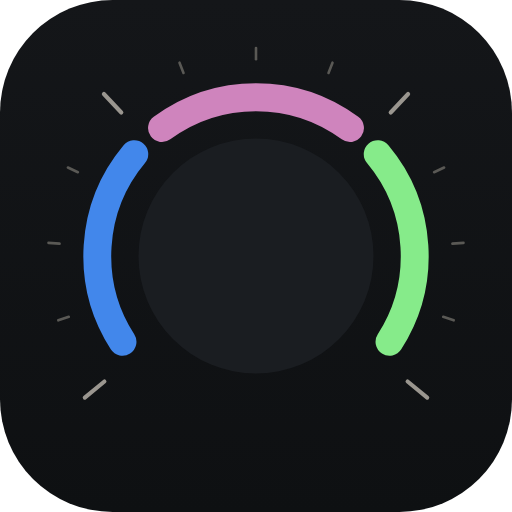
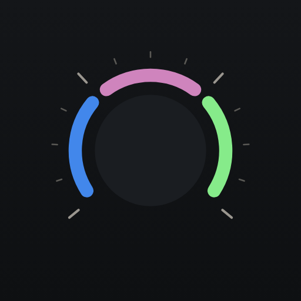
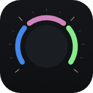
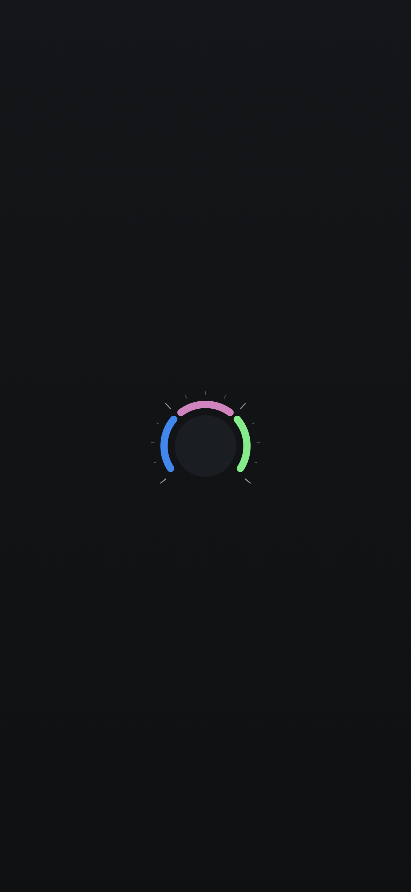

Every block here is a real component, themed only by the tokens. Try it: answer a row, point at a dial, switch to Paper. The data are examples.
One per company, always in the same order. A lit segment is a front working now; a softer, thinner one is idle; the grey thin one is done today; amber breathes when it needs you; dashed is Friday fixing something. With a mouse, each segment opens its own front.
16 fronts on one dial. A segment is never shorter than twice its stroke, so the ones that do not fit are counted in the gap at the bottom ("+8"). Done fronts give their place first, then idle ones; what needs you is always drawn.
Yes and No are equal. When Friday recommends one, it has the outline and the line says so. A single action is the only amber button. After you answer, the row says what you said and keeps Undo for a few seconds, then leaves.
Each row opens its front. A bar only where there is a real count; otherwise just the status in words.
When nothing needs you, Done today takes the full weight: it is the reward. Your own answers come back in Just now as "You: …".
Four looks that never pass for each other. Old data is hatched and says its time; it never looks live.
On a front's page: you say, in your words, what Friday should change. Ctrl + Enter sends; Enter is a new line. What you sent stays readable, and Friday’s reply appears right under it.
For a decision that needs more than a row: why it is yours, about how long it takes, what to read first, the options (equal; Friday's suggestion has the outline) and an optional note.
A real table where there is room; on a narrow screen each row becomes a small card, so nothing scrolls sideways.
Your usage gauge, in the Friday colours: what is left in the week (outer) and in the 5-hour window (inner), the hours to reset as dots. Near the limit it turns amber (you can slow down); at the limit it is drawn plainly in the text colour until the reset. Never red.
Points at one thing without dimming the page: a ring with a gap and a short caption, one entrance, gone by itself or with "Got it". Amber only around something that needs you.
The instrument at rest: one segment per company in its colour, always in the same order, fine ticks, on the dark field. No amber: the icon never asks for anything.




Left is today. Right is a possible change. Nothing changes until you say so.
Friday DS v0.3 · components from adm-glitch/web-components · tokens from fd-tokens.css.